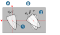
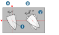

12.9. Optimal barrel cutter
|
Optimize parameters of barrel cutters based on surface and curve information. → → → → : Select a barrel cutter. A function for optimizing the barrel cutter is displayed in the tool definition (Optimize barrel cutter parameters). |
2024 |
For machining with barrel cutters, the optimal shape of the barrel cutter must first be found. This ensures that the surface to be machined is completely machined as required. The parameters of the required barrel cutter are optimized on the basis of surface and curve information. A surface and several curves in relation to this surface are included in the analysis. Preset values for the dimensions of the barrel cutter are taken from the tool definition in hyperMILL when called.
Select
Surface: Select the surface for which an optimal barrel cutter geometry is to be found for machining.
Curve: Select one or more curves in relation to this surface that represent the planned machining path. The number of selected elements is displayed.
Barrel
When calling the dialog from the hyperMILL job definition (Tool dialog page) and selecting a barrel cutter, the Cutter parameters of the selected tool are adopted. The parameters can then be changed manually.
For Base diameter range and Barrel radius range, enter the minimum and maximum values between which the optimal value is to be calculated. All other parameters are considered fixed when the calculation is running.
Both the variables and the fixed parameters are included in the calculation of the optimal barrel radius and base diameter.
Note
If the dialog is started via the → menu, preselect an option for a conical, tangential or general barrel cutter for Barrel type and an option (ball, radius, sharp) for Tip type.
If the dialog is started via the hyperMILL job definition (Tool dialog page), these parameters are already preset and can no longer be changed.
Options
Contact parameter: Enter how the preview of the tool contact point of the barrel cutter should be positioned in relation to the selected curve. For example, if the value 0.5 is entered, the tool preview is displayed at the center of the curve.
Barrel - max. distance:  Enter a maximum permissible distance between the barrel contour and the surface to be machined. This distance can be either above or below the
contact point. Any allowance in between is not taken into account; the tool is always calculated so that it remains in contact with the geometry.
Enter a maximum permissible distance between the barrel contour and the surface to be machined. This distance can be either above or below the
contact point. Any allowance in between is not taken into account; the tool is always calculated so that it remains in contact with the geometry.

Tilting
-
Iso: Calculate the dimensions of the optimal barrel cutter with the tool axis parallel to the U or V direction of the isoparameters of the selected face. This is the default behavior.
-
Normal: Calculate the dimensions of the optimal barrel cutter with the tool axis normal to the selected curves.
Create 3D: Create a 3D model of the calculated tool geometry in the graphics area.
Lead angle
Enter a lead angle as the tool orientation along the selected curve or transfer it from the job settings ( → → ) to optimize the calculation of the barrel radius.
The lead angle value is taken from the tool settings of a job, can be changed and is transferred back. In case of an Associative job copy, the associativity is lost if the value is changed.
-
Fixed lead angle:
 : Enter a value for the lead angle that must be maintained when calculating the optimum barrel shape. With a value of 0°, the alignment of the tool axis
corresponds to the U or V direction of the selected surface.
: Enter a value for the lead angle that must be maintained when calculating the optimum barrel shape. With a value of 0°, the alignment of the tool axis
corresponds to the U or V direction of the selected surface. -
Min. lead angle and Max. lead angle:
 : Enter a max. and min. value for the lead angle, which must be considered when calculating the
optimum barrel shape. Contact point of the tool with the selected surface,
: Enter a max. and min. value for the lead angle, which must be considered when calculating the
optimum barrel shape. Contact point of the tool with the selected surface,  Selected surface.
Selected surface.
Verification
-
Single curve: Select an individual curve to specify where the tool preview should be displayed. Enter a value or vary it using the slider. The determined tool geometry is moved along the curve
-
Use Face offset to enter a value that enlarges the internal tool shape to allow a preview of the contact area between the tool and the surface. The smaller the value, the smaller the preview.
Further options
Cutting side: Change the tool position in relation to the surface normal of the selected surface (inside or outside).
Infeed direction: Reverse the infeed direction of the tool in relation to the orientation of the selected curve.
Automatic computation: The optimal tool geometry is displayed as a preview for the set values and only in the slider position that defines the contact parameter.
Global mode: If Global mode is selected for the calculation, every point in the selected curves is taken into account so that the optimal tool shape is calculated within all selected curves. Depending on the geometry, the calculation may take some time. Otherwise, or if the slider is moved, the calculation is performed continuously for each point currently reached. When the slider stops, the result is updated. Different tool dimensions are obtained for the various points analyzed on the curves.
Result
Optimal barrel radius: The determined maximum possible barrel radius that fits the area is output.
Optimal barrel diameter: The determined maximum base diameter (shaft side) that fits the surface is output.
Optimal Lead Angle: The optimal tool lead angle is output.
Note
The function does not carry out a collision check! This is performed in the cycle. The optimum shape is determined using an analytical calculation on the selected surface, taking into account a safe tolerance, in order to obtain the best possible shape.